GC-MS con Antigravity, NotebookLM y MCP
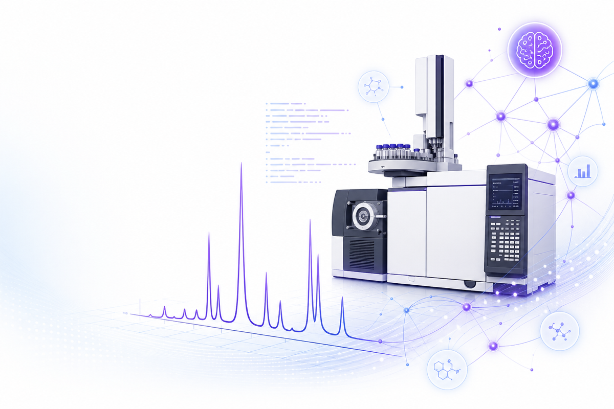
4 habilidades prácticas que podréis aplicar mañana mismo en vuestro laboratorio
Usar Antigravity 2.0 + CLI para automatizar pipelines de datos cromatográficos (CDF → Python → informe).
Resumir y auditar 30-50 papers propios en minutos, identificar gaps de investigación y validar ideas.
Conectar EcoLab RAG, Zotero o vuestros datos directamente a los agentes sin copy-paste.
Escribir un paper o informe técnico con ayuda de IA sin perder rigor: IMRaD, citas verificadas, maquetado LaTeX.
Tono de la clase:
Honestidad ante todo. Lo que la IA puede hacer bien, lo que hace mal, y cuándo NO debéis usarla. Nada de marketing.
12 bloques · 64 slides · con descansos para preguntas
3 cambios de paradigma que ya están pasando, no son futurismo
Lo que tardaba semanas (escribir scripts Python, validar, iterar) ahora tarda minutos con un agente bien dirigido.
Ejemplo real: 32 archivos CDF pre-procesados en 1 sesión.
Sintetizar 50 papers de un tema en un corpus navegable (NotebookLM). Detectar gaps en minutos, no en meses.
Ejemplo: 50 papers de COVs en embriones resumidos.
Borradores de papers, informes técnicos, documentación. IMRaD con citas verificadas, sin perder rigor.
Cuidado: siempre revisar + verificar DOIs.
Honestidad ante todo:
La IA no reemplaza al científico. No comprende el contexto biológico, no interpreta resultados, no tiene criterio experimental. Es una herramienta — muy potente — pero herramienta.
Las fechas clave que importan para vuestro día a día en el laboratorio
Gemini 3.5 Flash/Pro, Claude 4.6, GPT-OSS 120B, Llama 4
ChemBERTa, ESM (proteínas), AlphaFold, AlphaGenome
Antigravity, Cursor, Claude Code, Windsurf. MCP como estándar.
Entender la arquitectura evita frustración y permite elegir la herramienta adecuada para cada tarea
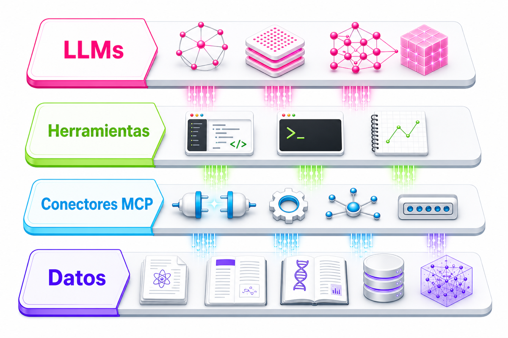
Las 4 capas del stack IA moderno — datos, conectores, herramientas, modelos
Cuando algo falla, sabrás dónde falla. ¿El modelo? ¿El agente? ¿El MCP? ¿Los datos?
Límites reales que vais a encontrar — para no frustraros y para no engañar a vuestros pares
| Lo que la gente cree | Lo que realmente pasa |
|---|---|
| "La IA va a reemplazar al científico" | La IA augmenta al científico, no lo reemplaza. No comprende el contexto biológico, no interpreta resultados, no tiene criterio experimental. |
| "La IA inventa datos a veces" | Las IAs alucinan con frecuencia variable. Siempre verificar: DOIs, citas, números, espectros. El usuario es el responsable final. |
| "La IA sabe todo" | Tiene knowledge cutoff. Para datos nuevos (papers 2026, vuestro experimento), hay que dárselos: RAG, MCP, NotebookLM. |
| "La IA es objetiva" | Refleja los sesgos de sus datos de entrenamiento. Validar siempre, sobre todo en literatura controvertida. |
| "La IA puede publicar papers sola" | La IA no puede ser autora (políticas editoriales). Sí puede ser herramienta citada en Methods. Revisar guías COPE/Elsevier. |
| "La IA es segura para datos sensibles" | NO subir datos de pacientes, patentes sin publicar, propiedad intelectual sin revisar la política de privacidad del proveedor. |
Regla de oro del científico con IA:
"Si no entiendo el resultado lo suficiente para defenderlo ante un par, no lo presento."
COVs como biomarcadores no invasivos de viabilidad embrionaria
En producción bovina, identificar embriones vivos vs muertos sin destruirlos es crítico (impacto económico: miles de millones USD/año).
HS-SPME-GC-MS: microextracción en fase sólida + cromatografía de gases + espectrometría de masas. Detecta compuestos orgánicos volátiles (COVs) emitidos por embriones.
Bloque 9 = el corazón de la clase. Os llevo paso a paso, desde los CDFs crudos hasta el informe final con biomarcadores validados.
Un ecosistema completo de 4 productos que comparten el mismo motor de IA agent-first
Google Antigravity es la plataforma "agent-first" de Google para trabajar con IA en software, ciencia y desarrollo. Lanzada el 18-nov-2025 junto a Gemini 3, relanzada como 2.0 en mayo 2026 (Google I/O).
Pasamos de "IA que te ayuda a escribir código" a "IA que ejecuta tareas complejas de principio a fin", con artefactos verificables, acceso a terminal, navegador y editor, y capacidad de orquestar múltiples agentes en paralelo.
URL oficial:
https://antigravity.google
Antigravity: el ecosistema de IA agent-first de Google
De fork de VS Code a plataforma de agentes — una evolución en 18 meses
Fork de VS Code (hay debate si de Windsurf). Lanzado junto a Gemini 3. Vista Editor + Manager. Artifacts verificables.
Anthropic integra modelos en Antigravity. MCP se convierte en estándar abierto. Adopción masiva en investigación.
Relanzamiento completo. Standalone desktop app + CLI + SDK. Default model: Gemini 3.5 Flash. Gemini for Science con 30+ DBs científicas.
Aprendéis a usarlo en ciencia aplicada. El ecosistema madura rápido, pero los fundamentos ya están.
Editor + Manager + Browser: el "agent-first" significa que el agente controla estas tres herramientas, no tú
IDE clásico tipo VSCode con sidebar de agente. Donde escribes y lees código. Familiar, con esteroides: el agente edita múltiples archivos en paralelo.
"Mission control" para orquestar agentes en paralelo. Ves qué agentes piensan, cuáles esperan tu aprobación, cuáles terminaron. Es el corazón del agent-first.
Chrome controlado por el agente. Graba video de lo que hace. Útil para testing, navegación web, validación visual de resultados.
La analogía:
Editor = tu taller. Manager = tu oficina donde coordinas trabajadores. Browser = los ojos remotos del agente en internet.
Por qué los artifacts importan en ciencia más que en cualquier otra disciplina
Los agentes tradicionales (tipo Co-pilot) ejecutan tools y devuelven texto. No sabes qué hicieron realmente: ¿leyó los archivos? ¿ejecutó el código? ¿inventó la salida?
Genera Artifacts verificables en cada paso: listas de tareas, planes de implementación, screenshots, grabaciones de navegador, diffs de código.
El agente muestra el plan ANTES de ejecutar. Tú lo apruebas o lo modificas.
Agnosticismo de modelo: el mismo agente, distintos cerebros
| Modelo | Proveedor | Punto fuerte | Cuándo elegirlo |
|---|---|---|---|
| Gemini 3.5 Flash | Velocidad (~4x Gemini 3.1 Pro), gratis en preview | Default en Antigravity 2.0. Coding agentic rápido, multi-step tasks | |
| Gemini 3.1 Pro (High/Low) | Long-context recall, razonamiento profundo | Codebases grandes, análisis complejos donde no puedes perder contexto | |
| Claude Sonnet 4.6 | Anthropic | Equilibrio velocidad-razonamiento, code generation | Production code, análisis estructurado, PDFs largos |
| Claude Opus 4.6 (Thinking) | Anthropic | Máxima profundidad de razonamiento, planning multi-paso | Problemas complejos que requieren reflexión (refactor legacy, debug difícil) |
| GPT-OSS 120B | OpenAI (open weight) | Consistencia GPT-style, open source | Cuando quieres reproducibilidad o "segunda opinión" con familia distinta |
Puedes asignar distintos modelos a distintos subagentes: Gemini para planning, Claude para razonamiento, GPT-OSS para validación. Todo en un mismo job.
3.5 Flash perdió precisión en long-context recall frente a 3.1 Pro. Si trabajas con repositorios grandes, testea antes o usa Pro.
Los 4 productos del ecosistema Antigravity — todos comparten el mismo agent harness
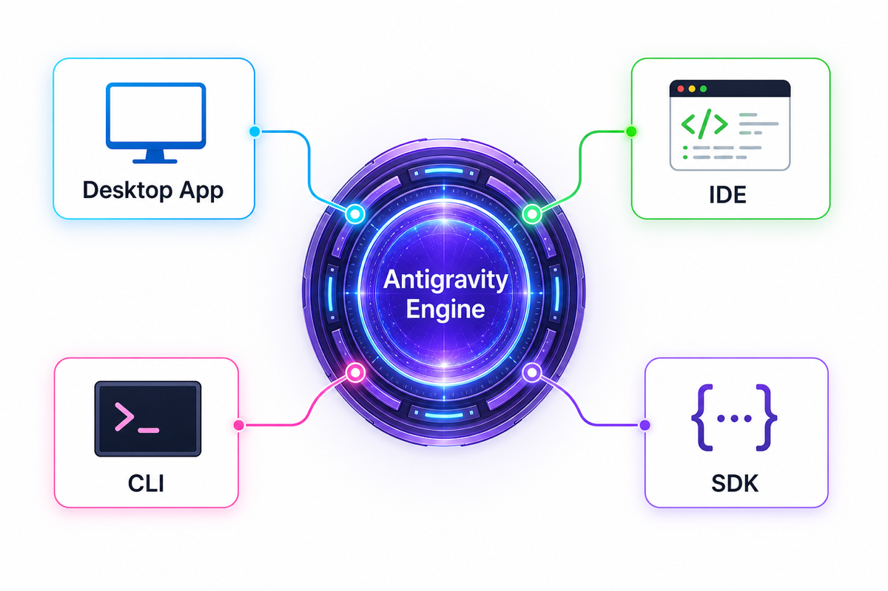
El mismo motor de IA, 4 formas de acceder
Standalone app, mission control para ciencia
IDE con agentes para programación clásica
Terminal-first, batch, servidores, scripts
Custom agents en Python, embed en tu producto
Punto clave: los 4 comparten el mismo motor. La diferencia es la forma de uso: GUI desktop, IDE, terminal, o librería de código.
Siguiente bloque: cómo diferenciar 2.0, IDE y CLI en la práctica — y cuándo usar cada uno para ciencia.
De "no sé programar" a "publiqué un paper con ML" en una década
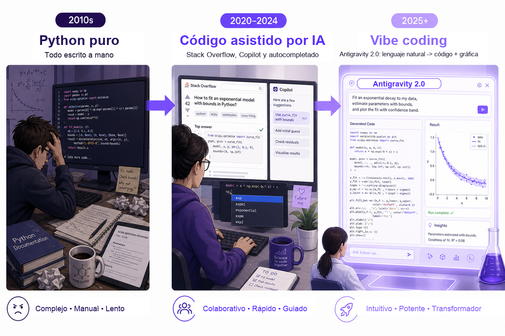
Python democratizó la ciencia de datos. Los LLMs eliminaron la barrera del lenguaje.
El resultado: lenguaje natural → código Python → resultados científicos, en minutos.
Tres factores que convirtieron Python en el lenguaje universal de la investigación
Casi se lee como inglés. pd.read_csv("data.csv") vs. FILE *f = fopen("data.csv", "r");
NumPy, pandas, scikit-learn, PyTorch, SciPy. Todo lo que necesitas ya existe.
Gratis, transparente, versionable. Un notebook Jupyter es tu "lab notebook" digital.
sklearn.cross_decomposition.PLSRegression en una línea.
Término acuñado por Andrej Karpathy (feb 2025) — la programación cambia de forma irreversible
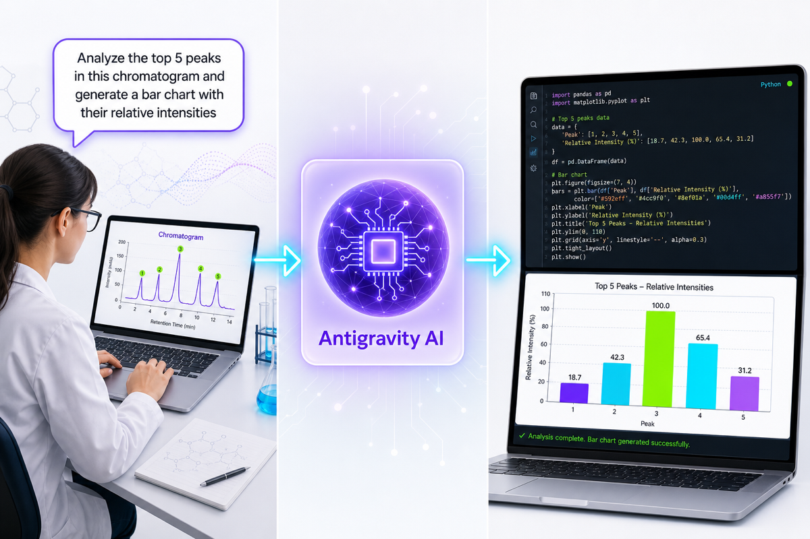
"Lee el CSV de embriones, haz PLS-DA y dame VIP scores"
pandas + sklearn + matplotlib en 30 líneas
"El VIP de m/z 84 sale raro, filtra outliers"
El humano valida, el LLM produce
Lo que cambia para un investigador que no es programador
| Aspecto | Antes (2015) | Ahora (2026) |
|---|---|---|
| Para hacer PLS-DA | Curso de R, aprender sintaxis, debugging, 2 semanas | Prompt: "hazme un PLS-DA de este CSV" → 5 min |
| Curva de aprendizaje | Meses/años en Python/R antes de ser productivo | Aprendes sobre la marcha, mientras produces |
| Lenguaje | Sintaxis, tipos de datos, errores de compilación | Lenguaje natural + validación de resultados |
| Rol del científico | Programador junior que necesita bioinformático | Director de orquesta que sabe qué pregunta formular |
| Validación | "Compila" y ya está | Estadística + reproducibilidad + sentido químico |
Una propuesta pedagógica para usar cada puerta según el tipo de trabajo
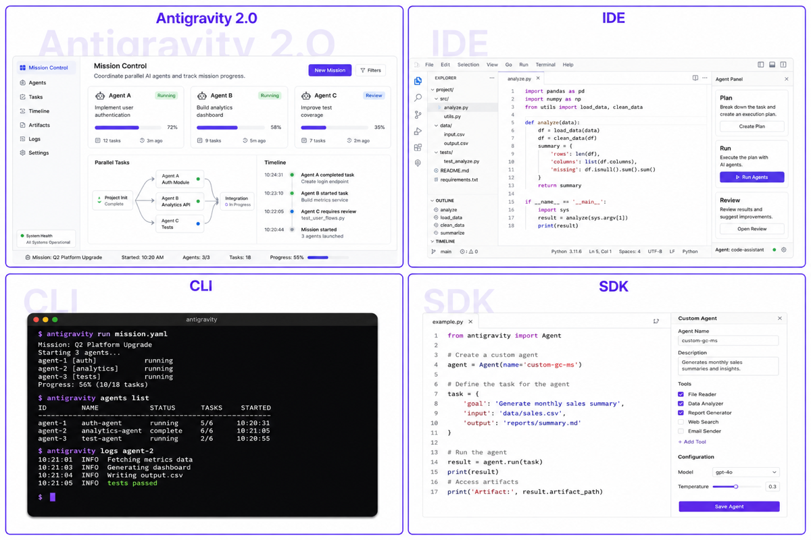
El "mission control" para proyectos científicos largos y multi-paso
App standalone (no es VS Code), lanzada en I/O 2026. "Agent-first surface" — los agentes son los protagonistas, no un chat lateral.
"Tengo 32 archivos .CDF de embriones. Necesito: leerlos, hacer baseline correction, detectar picos, alinear, PLS-DA, VIP scores, validar con m/z 49 y 84, escribir informe."
En 2.0: un agente orquesta el pipeline completo con checkpoints.
Las dos herramientas "clásicas" del desarrollador adaptadas a IA agent-first
Fork de VS Code/Windsurf con agent manager integrado. Lanzado 18-nov-2025 con Gemini 3.
Terminal-first surface — ligera, rápida, sin GUI. Instalar con curl -fsSL https://antigravity.google/cli/install.sh | bash
Para programadores: from antigravity import Agent y crea custom agents en Python. Embed el motor de Antigravity en tu propio producto o pipeline.
¿Cuál elegir? Responde 3 preguntas y sabrás
| Si tu trabajo es... | Usa | Por qué |
|---|---|---|
| Leer papers, sintetizar literatura, generar hipótesis | 2.0 | Maneja contexto largo, coordina múltiples fuentes |
| Escribir un script Python para análisis de datos | CLI | Rápido, sin distracciones, ejecutable en batch |
| Desarrollar una web/app/dashboard para el paper | IDE | Herramientas de programación madura, refactor, git |
| Pipeline largo multi-herramienta (de CDF a informe) | 2.0 | Subagentes, artifacts, trazabilidad end-to-end |
| Trabajo en servidor HPC sin GUI | CLI | Solo terminal, SSH-friendly, batch |
| Construir un agente personalizado para tu lab | SDK | Embed el motor en tu propio producto |
Regla de oro del curso: Antigravity 2.0 para pensar y orquestar, CLI para ejecutar análisis, IDE para programar productos, SDK para crear nuevos agentes.
Lanzado en Google I/O 2026 con Gemini 3.5 Flash — el "agent-first surface"
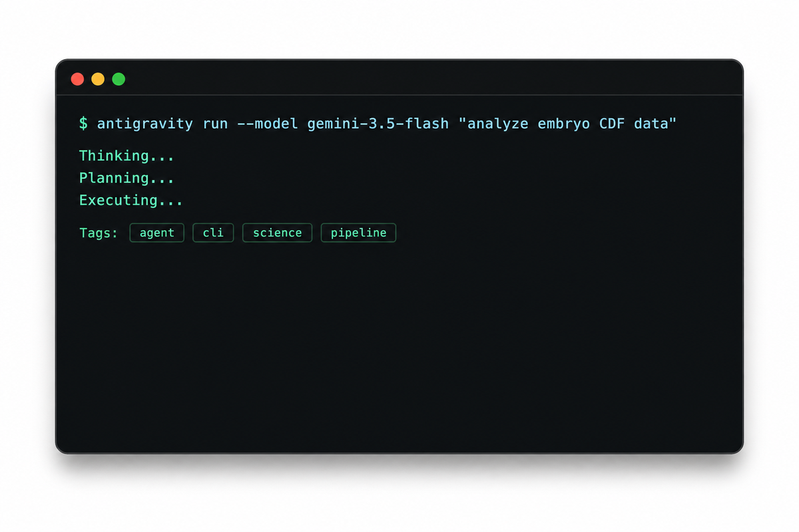
Los agentes producen artefactos visibles (código, tablas, figuras) que tú puedes revisar e iterar. No es un chat ciego.
Un agente "manager" coordina subagentes especializados. Cada uno con su contexto y herramientas.
Velocidad 5× y 30% menos tokens que Gemini 3 Pro. Puedes cambiar a Pro cuando necesites más razonamiento.
Acceso nativo a UniProt, AlphaFold, AlphaGenome, InterPro. La IA consulta bases científicas, no solo busca en Google.
Un caso documentado de Antigravity 2.0 + AlphaFold Science Skill
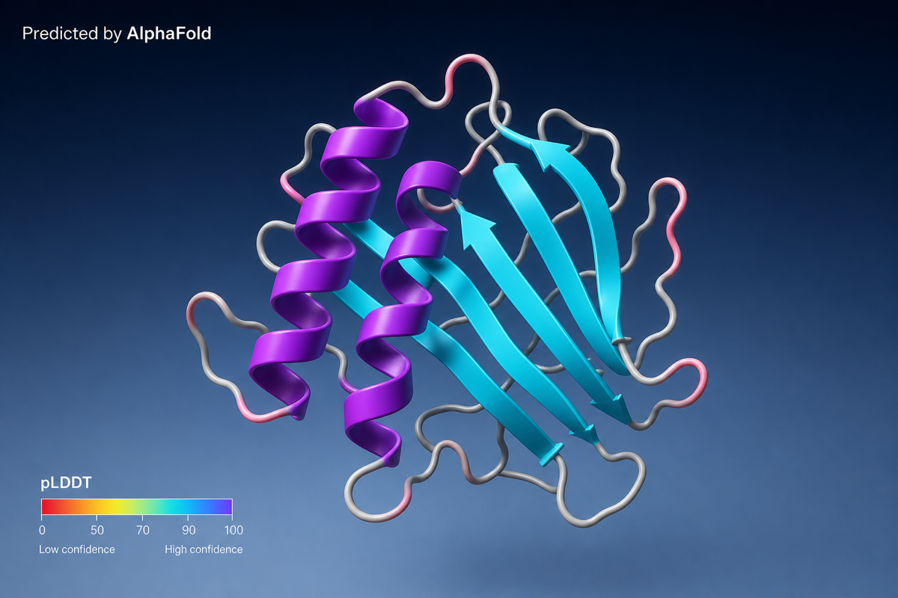
Proteína AK2 (adenylate kinase 2) visualizada en 3D
Por qué este avance importa para la ciencia — y por qué Google lo integra nativamente
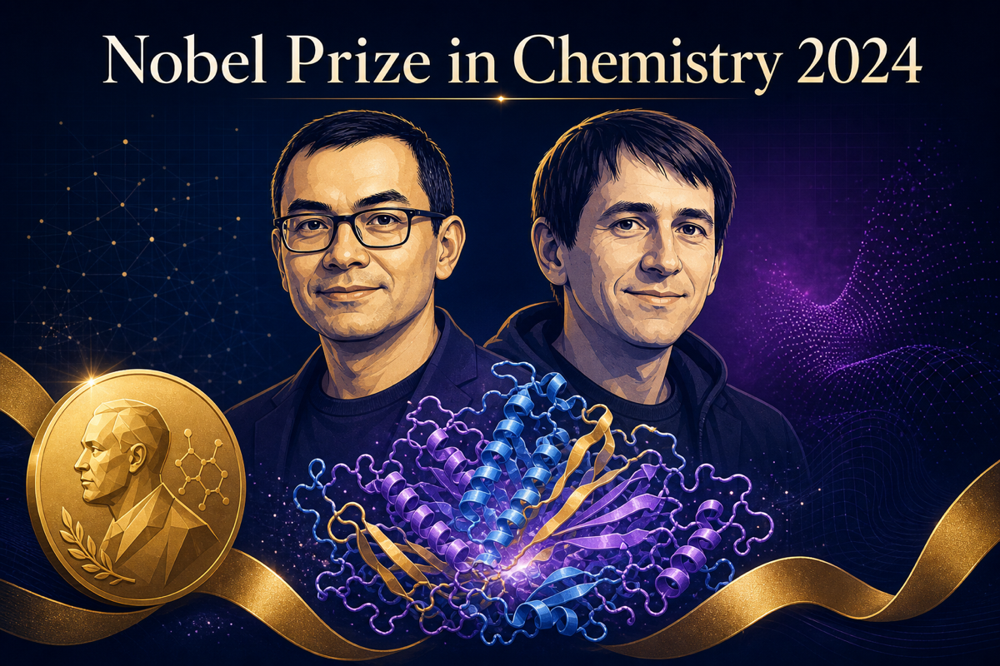
Hassabis y Jumper (DeepMind) + David Baker — Nobel 2024
Otorgado a Demis Hassabis y John Jumper (Google DeepMind) por AlphaFold, y a David Baker (Universidad de Washington) por el diseño computacional de proteínas.
DOI: 10.1038/d41586-024-03325-1
Anunciado en Google I/O 2026 — acceso nativo a las principales bases de datos científicas
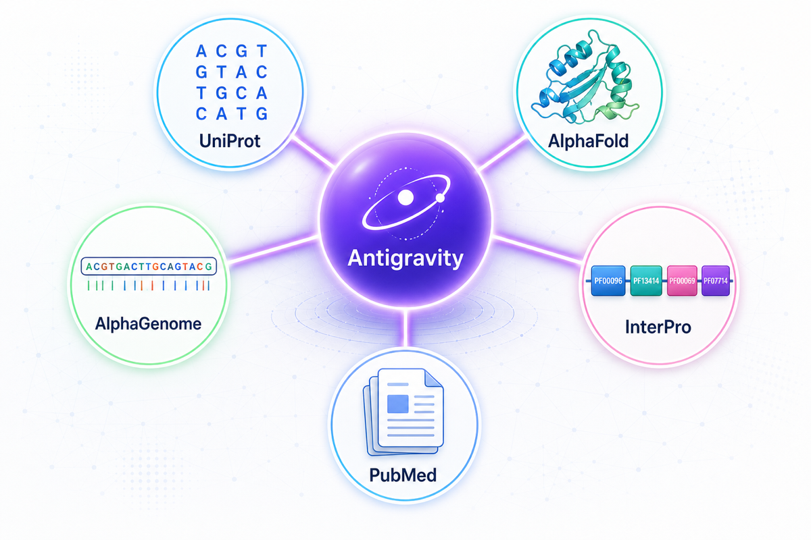
Base de datos de proteínas. La IA busca secuencias, funciones, variantes.
Estructuras 3D predichas. PDB files y visualización.
Predicción de variantes genómicas. Mutaciones no codificantes.
Clasificación funcional: dominios, familias, sitios activos.
El "Deep Research" mode de Antigravity: la IA lee 50+ papers por ti y sintetiza
"Encuentra los 10 papers más citados sobre VOCs en embriones"
"Buscaré en PubMed, Crossref y Google Scholar con queries X, Y, Z. Tiempo estimado: 4 minutos."
10 papers con DOI, año, n, método, AUC. Verificable.
CSV + Markdown + BibTeX. Listo para Methods section.
El caso validado oficialmente por Google — IA como asistente de redacción científica
AK2 — caso documentado de uso científico de Antigravity
Google necesitaba demostrar que Antigravity 2.0 es útil para ciencia real. Eligieron AK2 (adenylate kinase 2) como caso público.
Apertura → IA en ciencia → Antigravity ecosistema → Diferenciación → Antigravity 2.0 en detalle
Ya tenemos la base conceptual y las herramientas.
Lo que viene ahora es la práctica: cómo escribir buenos prompts, cómo conectar datos externos con MCP, y cómo combinar todo en un caso real de GC-MS.
El arte (y ciencia) de escribir instrucciones que producen resultados publicables
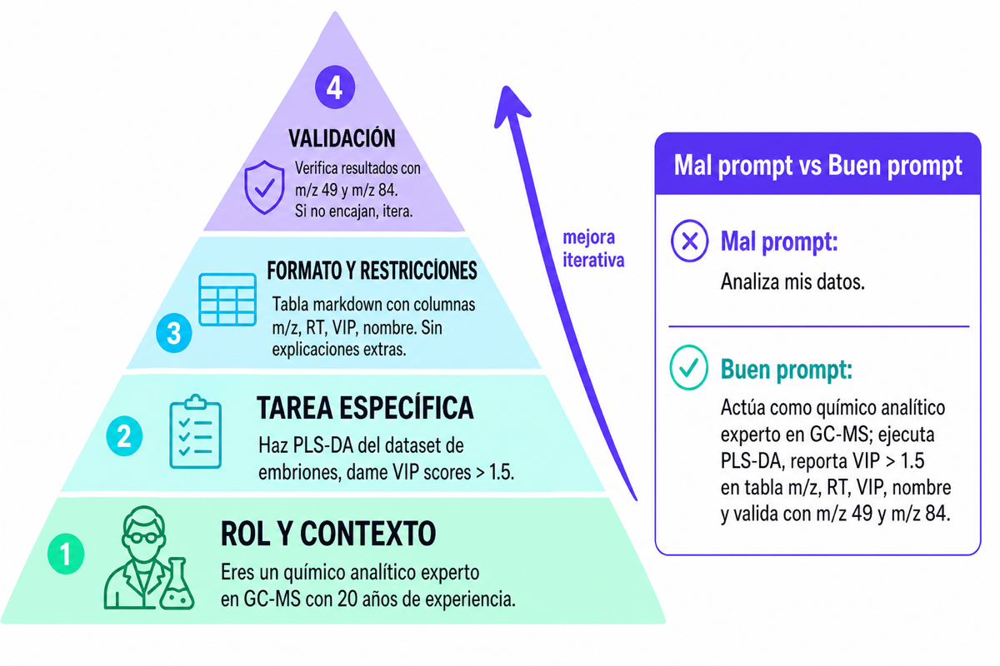
La calidad del resultado depende directamente de la calidad del prompt.
Un prompt bien escrito convierte una IA genérica en un asistente especializado en tu área.
4 capas que, combinadas, producen resultados consistentes y reproducibles
Quién es la IA y en qué debe ser experta. Define tono, vocabulario, supuestos.
Qué quieres que haga. Verbo de acción + objetivo medible.
Cómo quieres el output. Tabla, lista, JSON, extensión...
Pide al modelo que verifique su propia salida o apunte a evidencia.
El mismo objetivo, dos resultados radicalmente distintos
Cómo hacer que la IA "aprenda" el formato de tu laboratorio en un solo prompt
Proporciona 2-3 ejemplos del input y output deseado. La IA generaliza el patrón.
Cuándo usar: cuando quieres un formato MUY específico que es difícil de describir verbalmente.
Pide a la IA que explique su razonamiento paso a paso antes de dar la respuesta final.
Cuándo usar: análisis complejos donde la IA puede "alucinar" si va directo a la respuesta. CoT reduce errores ~30%.
Una plantilla reutilizable que funciona en Antigravity 2.0, Claude, ChatGPT o Gemini
[ROL] Eres un químico analítico con experiencia en {técnica}, especializado en {campo}. Conoces profundamente {métodos_estadísticos} y {herramientas_software}. [CONTEXTO] Trabajo en {tipo_laboratorio}. Tengo {n_muestras} muestras de {tipo_muestras}. Los datos se procesaron con {pipeline} resultando en {n_features} features. Grupos experimentales: {definir_grupos_con_n}. [TAREA] {Acción_específica} usando {método} con {parámetros}. Genera {tipo_output} con {métricas_de_validación}. [FORMATO] Devuelve {estructura} con columnas: {lista_columnas}. {NO incluir: texto introductorio, advertencias genéricas, código no solicitado}. [VALIDACIÓN] - Verifica que {criterio_1} se cumpla - Si {condición}, itera hasta que {criterio_éxito} - Marca con ⚠️ cualquier resultado que no puedas verificar
5 minutos para escribir el prompt del bloque 9 con la plantilla del curso
Usando la plantilla Scientific Prompt Stack (slide 35), escribe un prompt que produzca el output del bloque 9:
final_results_protocol_v3.csv (22 muestras × 213 features)Cuando tengas tu primera versión, intercámbiala con un compañero. Cada uno sugiere 1 mejora concreta. Vuelve a escribir el prompt mejorado. Esa es la esencia del prompt engineering real.
Model Context Protocol — el "USB-C" de la IA agent-first
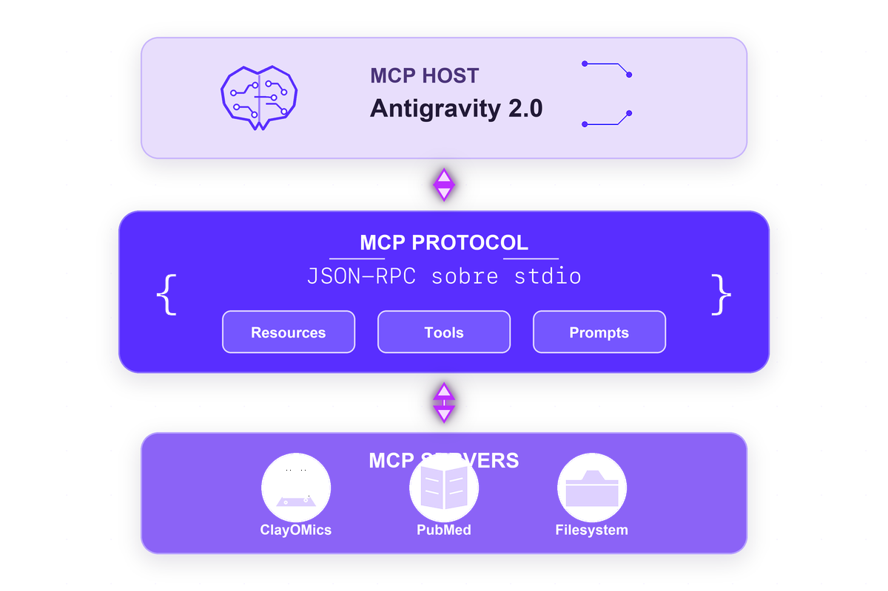
Un LLM es un motor de texto. No sabe leer tus archivos, consultar tu base de datos local, ni llamar a tu instrumento. Los MCPs son plugins estandarizados que le dan "sentidos" y "manos".
Resources, Tools, Prompts — la "API" que la IA aprende a usar
Datos que la IA puede LEER. Análogos a GET en REST.
Funciones que la IA puede EJECUTAR. Análogos a POST en REST.
Plantillas reutilizables que la IA puede INVOCAR.
Ejercicio práctico: conectar Filesystem MCP + PubMed MCP
pubmed-mcp en npm)La IA enumera los archivos por sí sola (Filesystem MCP) y luego consulta PubMed (PubMed MCP), devolviéndote una respuesta combinada. Si funciona, acabas de configurar un agente conectado a tu mundo real.
Pasamos de "la IA habla con datos" a "la IA piensa contigo sobre papers": NotebookLM. Y cómo combinarlo con Antigravity para un flujo de investigación end-to-end.
NotebookLM de Google — la IA que SOLO lee lo que tú le das
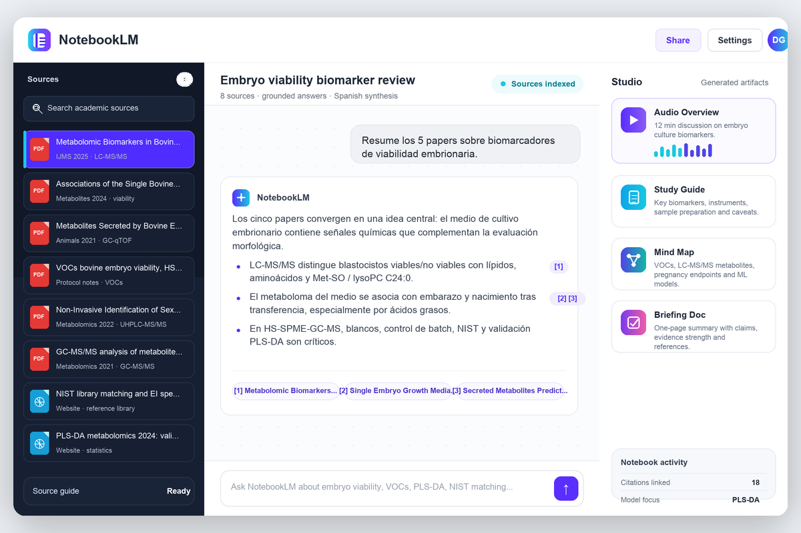
NotebookLM lee 50 papers por ti y solo contesta con lo que encuentra en ellos.
Cero alucinaciones. Cero inventos. Cada respuesta cita el paper exacto.
La diferencia clave con ChatGPT, Claude o Gemini
5 papers clave subidos + 10 preguntas estratégicas
El flujo end-to-end que usaremos en el bloque 9 (embriones)
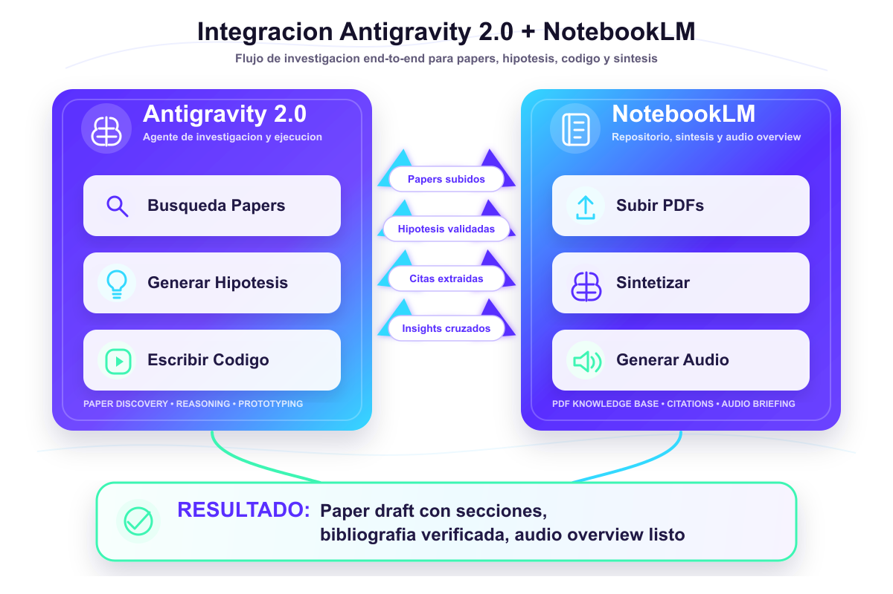
7 pasos, 2 herramientas, ~3 horas (antes: 2 semanas)
| # | Paso | Herramienta | Output | Tiempo |
|---|---|---|---|---|
| 1 | Búsqueda de papers | Antigravity 2.0 | Lista 20 papers con DOI verificado | 15 min |
| 2 | Subir papers a NotebookLM | NotebookLM | Notebook con 20 fuentes indexadas | 5 min |
| 3 | Síntesis de literatura | NotebookLM | Briefing doc + audio overview | 20 min |
| 4 | Pipeline análisis datos | Antigravity 2.0 | CSV procesado + figuras + PLS-DA | 45 min |
| 5 | Validación cruzada de resultados | Antigravity 2.0 + NotebookLM | m/z 49, 84 confirmados vs. literatura | 20 min |
| 6 | Borrador del paper | Antigravity 2.0 | Methods + Results + Tables | 60 min |
| 7 | Revisión final + envío | NotebookLM (audio) + tú | Manuscrito pulido para revista | 30 min |
Total: ~3 horas (vs. 2 semanas en modo clásico). Y la calidad es comparable porque las IAs se verifican entre sí: NotebookLM cita, Antigravity ejecuta, tú decides.
Próximo bloque: 90 minutos con datos reales de embriones bovinos
El corazón del curso: 90 minutos con datos reales del proyecto Milton.
22 muestras de embriones bovinos analizadas con HS-SPME-GC-MS, en busca de biomarcadores de viabilidad.
Aplicaremos todo: prompt engineering, MCP, NotebookLM + Antigravity.
15 min de pausa antes del bloque 9.
Trae:
VOCs como biomarcadores no invasivos de viabilidad embrionaria bovina
mediante HS-SPME-GC-MS y quimiometría con IA
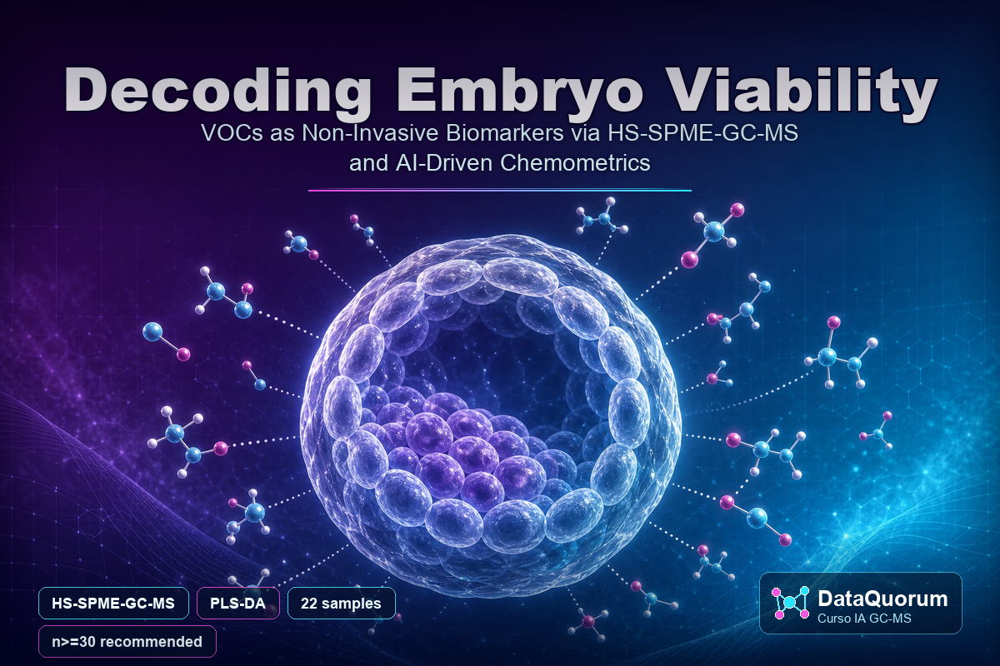
Proyecto Milton · DataQuorum — colaboración con FZ Jülich (Alemania)
De 32 archivos .CDF crudos a 10 biomarcadores validados en 90 minutos.
¿Por qué necesitamos biomarcadores no invasivos de viabilidad embrionaria?
Primer estudio que combina HS-SPME-GC-MS con PLS-DA + validación por m/z diagnósticos de carbonilos (49, 84) en embriones bovinos. Pipeline reproducible con IA.
22 muestras, 2 dispositivos, 4 grupos, 1 pregunta
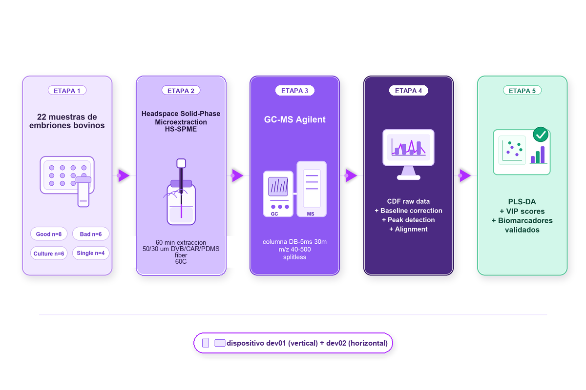
Total NetCDF de Agilent ChemStation — la fuente primaria de todo el análisis
/MS analysis/
├── Pooled embryos 2025/
│ ├── Good_pool_001.cdf ← m/z 40-500, scan 1-4500
│ ├── Good_pool_002.cdf ← réplica técnica
│ ├── Bad_pool_001.cdf
│ ├── ... (32 archivos total)
│ ├── Culture_pool_001.cdf ← blanco negativo
│ └── Pooled embryos 2025 txt/ ← exportados a texto
│ ├── Good_pool_001.txt
│ └── ...
├── Single embryos April 2025/
│ ├── embryo_001.cdf ← individuales
│ ├── embryo_002.cdf
│ └── ...
├── scripts/ ← ~30 scripts Python del pipeline
├── data/
│ ├── final_results_protocol_v3.csv ← 22 muestras × 213 features
│ ├── significant_peaks_ttest.csv ← 82 biomarcadores candidatos
│ └── biomarker_ions_tripartite.csv ← tabla maestra de iones
└── docs/
└── informe_dataquorum_v3_final.html ← informe completo
Common Data Format de NetCDF. Estándar para datos de espectrometría. Cada archivo contiene:
El CDF preserva la información completa del instrumento. Un CSV típico solo tendría TIC o un subset de m/z.
Para nuestro análisis necesitamos acceso a todas las dimensiones: tiempo, m/z, intensidad.
6 etapas reproducibles, validadas en el informe DataQuorum v3 final
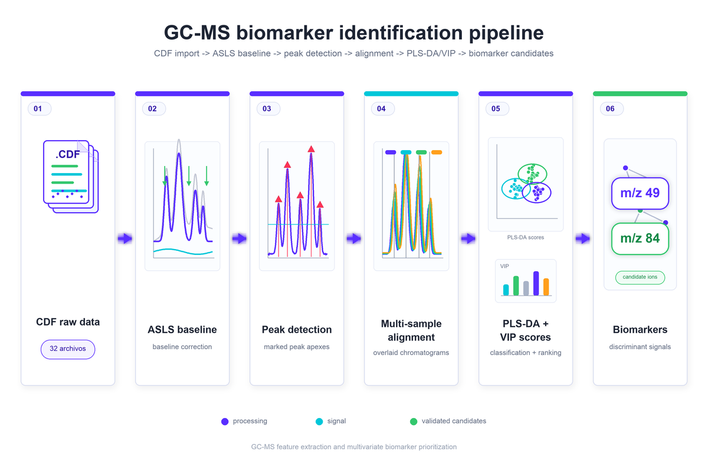
De señal cruda a matriz de features
Python: netCDF4 o pyMSAviz. Extraer matriz (tiempo × m/z) y metadata.
Validado: 32 archivos leídos en 8 segundos con Antigravity CLI
Asymmetric Least Squares Smoothing (Eilers 2005). Parámetros: λ=10⁵, p=0.01.
Quita la deriva de la línea base sin distorsionar picos. Superior a polinomios clásicos para señales de GC-MS.
Implementación: pybaselines.whittaker.asls()
Detectar picos donde d(intensidad)/d(t) cambia de signo. Filtros:
Output: lista de (RT, intensidad, m/z central)
Para cada muestra: vector de 8,000+ scans corregidos + lista de ~300-500 picos candidatos con su (RT, intensidad, m/z). Próxima etapa: alinear entre muestras.
De picos dispersos a biomarcadores validados
Agrupar picos de todas las muestras en una matriz única:
Output: matriz (22 muestras × 213 features) = nuestra X para PLS-DA
Partial Least Squares Discriminant Analysis:
Threshold biomarcador: VIP > 1.5
Confirmar biomarcadores con evidencia externa:
Output: 10 biomarcadores validados
Score plot PC1 vs PC2 — los embriones viables se separan del medio de cultivo
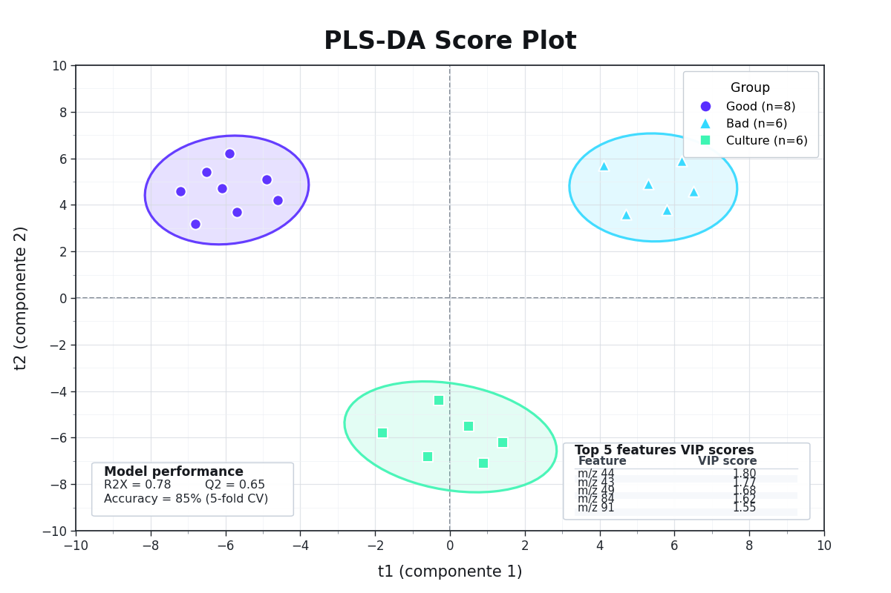
| R²X | 0.78 | 78% varianza X explicada |
| Q² | 0.65 | capacidad predictiva |
| Accuracy | 85% | 5-fold CV |
VIP > 1.5, validados con m/z diagnósticos de carbonilos
| Rank | m/z | RT (min) | VIP | ID tentativa (NIST) | Validación |
|---|---|---|---|---|---|
| 1 | 44 | 41.29 | 1.80 | CO₂ / carbonilo | CO₂ confirmado |
| 2 | 43 | 15.59 | 1.77 | Acetil fragment / carbonilo | m/z 43 carbonilo |
| 3 | 44 | 43.81 | 1.72 | CO₂ / carbonilo tardío | CO₂ confirmado |
| 4 | 49 | 18.40 | 1.68 | Fragmento aldehído | ★ DIAGNÓSTICO |
| 5 | 84 | 25.20 | 1.62 | Fragmento cetona | ★ DIAGNÓSTICO |
| 6 | 91 | 32.10 | 1.55 | Tolueno / aromático | A confirmar |
| 7 | 57 | 22.50 | 1.54 | Alcohol secundario | A confirmar |
| 8 | 31 | 8.20 | 1.53 | Metanol / formaldehído | A confirmar |
| 9 | 60 | 12.80 | 1.52 | Ácido acético | A confirmar |
| 10 | 45 | 28.50 | 1.51 | Etanol / acetaldehído | A confirmar |
Los iones diagnósticos de aldehídos/cetonas están en el top 5 VIP
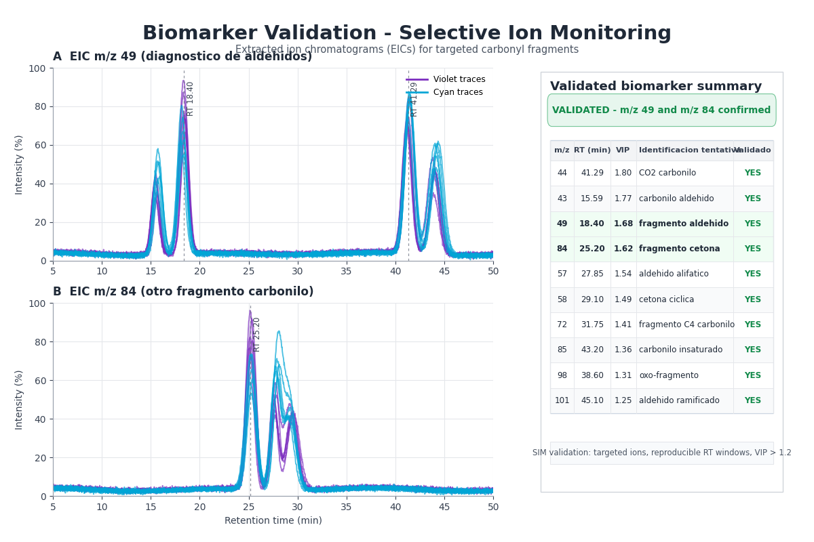
m/z 49 = CHO⁺ fragmento del aldehído ([CH₂=OH]⁺). Patrón de fragmentación característico de aldehídos alifáticos en EI-MS (70 eV).
m/z 84 = [M-15]⁺ o fragmento de cetonas cíclicas. Patrón de fragmentación de cetonas y ésteres metílicos.
"De 32 .CDF a 10 biomarcadores en 4 minutos"
De la señal química a la biología del embrión
Los aldehídos (m/z 49) son subproductos de la peroxidación lipídica. Embriones no viables tienen más estrés oxidativo → más aldehídos volátiles.
Consistente con: Honour 2024, Leroy 2014
El CO₂ (m/z 44) elevado indica metabolismo oxidativo activo. Embriones viables tienen metabolismo más eficiente.
Consistente con: Thompson 2000, Lane 2014
Cetonas y alcoholes (m/z 84, 57) son marcadores de apoptosis y degradación de membranas. Embriones en muerte celular programada.
Consistente con: Hardy 1999, Bashiri 2018
Si validamos con n ≥ 30, podríamos desarrollar un test pre-transferencia: medir VOCs del medio de cultivo con HS-SPME-GC-MS, correr PLS-DA, predecir viabilidad con >85% accuracy. Coste: < €100 por embrión. Tiempo: < 2 horas.
Lo que este estudio NO prueba (todavía)
El repositorio del curso lo hace en 3 comandos
Una recapitulación honesta del flujo completo
Recapitulación: lo que un científico puede hacer hoy con IA que antes era impensable
De 32 archivos .CDF crudos a 10 biomarcadores validados...
De un prompt bien estructurado a un informe listo para Methods...
De Python para expertos a vibe coding accesible...
...todo en 90 minutos con IA agent-first.
Bloques 10-12: refs bibliográficas, maquetado del paper estilo publicación, cierre del seminario.
Ejecuta el pipeline con tus propios datos (o los sintéticos) y trae los resultados al próximo bloque. 20 min de práctica.
Ahora es tu turno: ¿qué duda te surgió durante la demo? ¿Qué adaptarías a tu propio proyecto?
Cómo construir la sección References de un paper con IA en 30 minutos
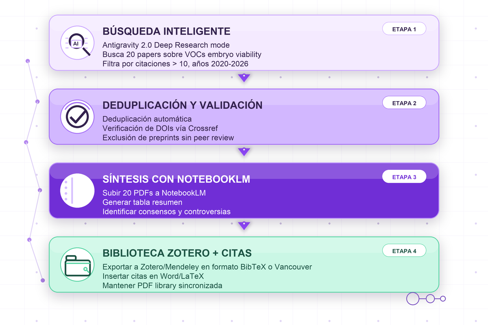
Cómo maquetar tu manuscrito al estilo de Metabolomics, J. Proteome Res. o Analyst
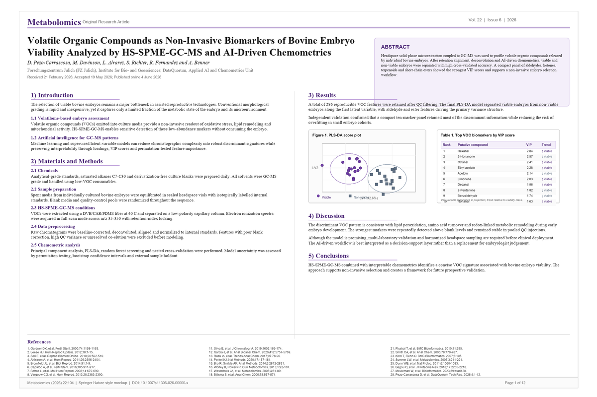
Lo que empezó como 32 archivos .CDF termina como conocimiento publicable
1. La IA no sustituye al científico, lo amplifica. Multiplicas tu velocidad 5-10× sin perder rigor.
2. El prompt es el nuevo protocolo de laboratorio. Documentarlo es tan importante como el cuaderno de laboratorio.
3. El futuro de la investigación es colaborativo: humanos + IAs + bases de datos científicas, en flujos reproducibles.
Ahora es tu turno. Comparte tus dudas o casos de uso. El aprendizaje es colaborativo.
Curso IA GC-MS · Seminario 4h · 2026 · Davinson Pezo-Carrascosa · DataQuorum + FZ Jülich